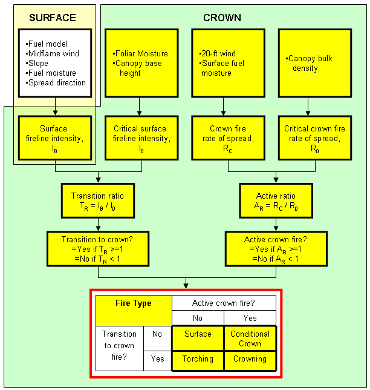

|
|
Fire Type |
Fire type is one of the following four types:
Assignment of fire type depends on the variables transition to crown fire? and active crown fire?.
Assignment of fire type based on Transition to Crown? and Active Crown Fire?|
Transition to Crown? |
Active Crown Fire? |
Fire Type |
|---|---|---|
| No | No | Surface |
| Yes | No | Torching |
| No | Yes | Conditional Crown |
| Yes | Yes | Crowning |
|
I/O |
Module |
If |
Notes |
|
Input |
None |
|
|
|
Output |
CROWN |
|
|
A surface fire spreads through the surface fuels that may include litter, grass, shrubs, and dead twigs. Surface fuels are generally defined to be less than about 6 feet deep.
A torching (passive crown) fire is spreading through the surface fuels, occasionally torching overstory trees. Spotting may increase the spread rate, but the overall spread rate can be the same as the surface fire spread rate.
A crowning (active crown) fire spreads through the overstory trees.
|  |